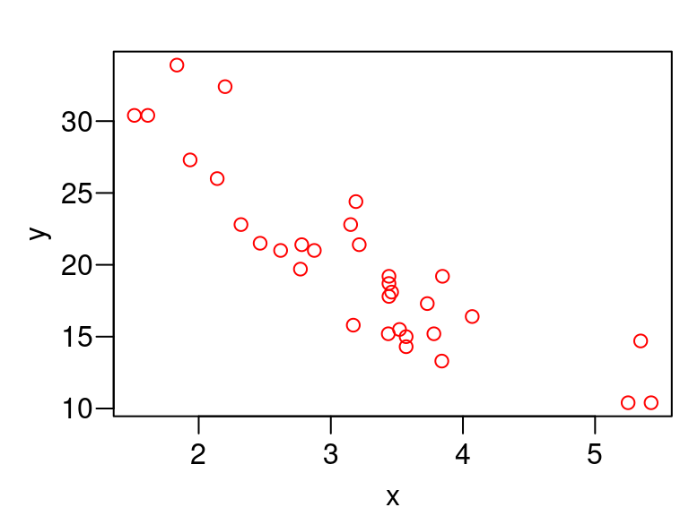
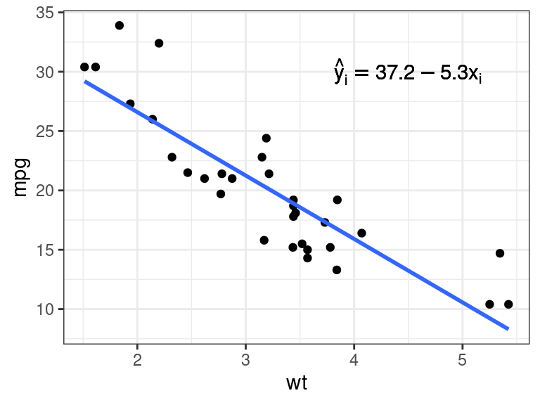

A Brief Overview of Metaprogramming
David Gerard
2022-02-07
Learning Objectives
- Overview of Metaprogramming.
- Learn a couple tricks.
- Hadley goes into a lot of depth in Chapters 17–21 of Advanced R. But we’ll just learn some common and simple use-cases.
- Those chapters only need to be understood in great depth if you actually want to help contribute to the tidyverse.
Overview
Metaprogramming refers to treating code as data. You can save code as a variable, modify the code with other code, then evaluate the code.
In R, we call saved code expressions.
You can use
rlang::expr()to create an expression.my_exp <- rlang::expr(x + y)The result is an expression of type
languagetypeof(my_exp)## [1] "language"If we print out
my_exp, we just see our codemy_exp## x + yWe can evaluate it (make the code run and provide a result) with
base::eval()x <- 10 y <- 11 base::eval(my_exp)## [1] 21The main ideas of metaprogramming:
- Treat source code as data
- Possibly modify source code programattically,
- Evaluate source code in a given environment.
R is one of the few popular languages that provides extensive support for metaprogramming, another one being Lisp (and its children).
We will use
{rlang}for manipulating expressions.library(rlang)
Types of Expressions
When constants are captured, they are just returned as the constant that they are.
x <- rlang::expr(2) typeof(x)## [1] "double"y <- rlang::expr("two") typeof(y)## [1] "character"Symbols are names of objects.
y <- rlang::expr(x) x <- c(22, 11, 13) eval(y)## [1] 22 11 13typeof(y)## [1] "symbol"Calls are function calls. Base R calls these languages.
y <- rlang::expr(sum(x)) x <- c(22, 11, 13) eval(y)## [1] 46typeof(y)## [1] "language"Calls act a lot like lists, where you can access arguments with list-like operators.
fun <- rlang::expr(f(x, y)) fun## f(x, y)The first element of a call is the function argument.
fun[[1]]## fEach additional element of a call is an argument.
fun[[2]]## xfun[[3]]## yYou can add new arguments by inserting symbols.
fun[[4]] <- rlang::expr(z) fun## f(x, y, z)You can make arguments have default values.
fun$w <- 1 fun## f(x, y, z, w = 1)
Capturing Code
As we’ve seen, to capture code, use
rlang::expr().x <- 10 y <- 11 myexp <- rlang::expr(x + y) myexp## x + yeval(expr = myexp)## [1] 21Capturing an expression directly from code is called quoting (e.g. from
rlang::expr()).Converting a string to an expression is called parsing and can be done with
rlang::parse_expr().my_exp2 <- rlang::parse_expr("x + y") eval(my_exp2)## [1] 21Converting code to a string is called deparsing. You do this with
rlang::expr_text()rlang::expr_text(my_exp2)## [1] "x + y"There is unquoting, where you selectively evaluate part of the expression. You use
!!(pronounced “bang-bang”) to unquote. So below,xis unquoted.x <- 10 y <- 11 rlang::expr(y + !!x)## y + 10- Though,
!!is an invention of{rlang}, so if you use base R expression methods it won’t work.
- Though,
To capture function arguments as an expression, you have to use
rlang::enexpr()(for “enrich expr()”).capture_exp <- function(x) { newexp <- rlang::enexpr(arg = x) return(newexp) } abc <- capture_exp(a + b + c) abc## a + b + ca <- 1 b <- 2 c <- 3 eval(abc)## [1] 6The reason is that if you use
rlang::expr(x)it will just return the expression withx, not with the values of the argument that you pass it.capture_bad <- function(x) { newexp <- rlang::expr(expr = x) return(newexp) } capture_bad(a + b + c)## xUse
rlang::enxprs()to capture a list of all arguments in...capall <- function(...) { all_args <- rlang::enexprs(...) return(all_args) } capall(x + y, y * 2)## [[1]] ## x + y ## ## [[2]] ## y * 2
Evaluated versus Quoted Arguments
Evaluated arguments are those whose values are used. E.g. in
sum(x), thexvalues are being used, but the variable namexis not.Quoted arguments are those where the code is used. E.g. in
library(rlang)we use the coderlangand not the value that rlang binds to.Lots of dplyr functions use quoted arguments (where they use expressions in terms of variable names).
Exercise: Which are evaluated arguments and which are quoted arguments in the below function calls
dplyr::filter(mtcars, mpg > 20, wt > 3) ggplot(mtcars, aes(x = wt, y = mpg)) + geom_point(col = "red") mtcars$mpg mtcars[["mpg"]]
Quosures
The
{rlang}team made a new data object called a quosure (quoting closure) that bundles an expression with an environment. This makes it so that you do not have ambiguity when you evaluate an expression in a different environment where you have variable bindings.E.g. the following is presents an issue of the user wanting
ato be 10 but we haveabeing 1000.fun <- function(x) { a <- 1000 x <- rlang::enexpr(x) eval(x) } a <- 10 fun(a + 1)## [1] 1001Using
rlang::enquo()will create a “quosure” which also includes the function environment. You cannot usebase::eval()with a quosure, so{rlang}provesrlang::eval_tidy().fun <- function(x) { a <- 1000 x <- rlang::enquo(x) rlang::eval_tidy(x) } a <- 10 fun(a + 1)## [1] 11Quosures are mostly used when you use dots
...in a function argument and want to use that in conjunction with data masking (where you use a data frame like an environment). This is what most{dplyr}functions do. E.g.dplyr::filer()uses data masking with the.datalike an environment and different predicates as the expressions. See the following help file for more information?`topic-quosure`
Application: Capturing Argument Names
If we come up with a cool new plotting function, we might want to have the axis names match the variable names. But this does not occur with the naive approach.
plot_red <- function(x, y) { plot(x, y, col = "red") } plot_red(x = mtcars$wt, y = mtcars$mpg)
We can do better by using quoted arguments, instead of evaluated arguments.
plot_red <- function(x, y) { xexpr <- rlang::enexpr(x) yexpr <- rlang::enexpr(y) plot(x, y, col = "red", xlab = rlang::expr_text(xexpr), ylab = rlang::expr_text(yexpr)) } plot_red(x = mtcars$wt, y = mtcars$mpg)
But we can do even better than that by also having the user provide the data
plot_red <- function(x, y, data) { xexpr <- rlang::enexpr(x) yexpr <- rlang::enexpr(y) plot(x = data[[xexpr]], y = data[[yexpr]], col = "red", xlab = rlang::expr_text(xexpr), ylab = rlang::expr_text(yexpr)) } plot_red(x = wt, y = mpg, data = mtcars)
This works because you can subset by an expression as well
mtcars[[rlang::expr(mpg)]]## [1] 21.0 21.0 22.8 21.4 18.7 18.1 14.3 24.4 22.8 19.2 17.8 16.4 17.3 15.2 10.4 ## [16] 10.4 14.7 32.4 30.4 33.9 21.5 15.5 15.2 13.3 19.2 27.3 26.0 30.4 15.8 19.7 ## [31] 15.0 21.4
Application: Math Notation in Plots
R has its own weird syntax for plotting mathematical equations.
See the following help file for a full description:
?plotmathR uses
expressions to implement mathematical notation in R.E.g. to write the following in R math
\[ \sum_{i=1}^\infty x_i^2 + \beta_1 \]
we would first create an expression using the R math notation:
mathexp <- rlang::expr(sum(x[i]^2, i == 1, infinity) + beta[1])You can then use that expression in
geom_text()orxlab()or whatever.plot.new() text(x = 0.5, y = 0.5, labels = mathexp, cex = 2)What if you want to place the estimated slope of a regression on a graph?
library(ggplot2) pl <- ggplot(mtcars, aes(x = wt, y = mpg)) + geom_point() + geom_smooth(method = "lm", se = FALSE)First, we calculate the OLS estimates:
lmout <- lm(mpg ~ wt, data = mtcars) coefvec <- coef(lmout) coefvec## (Intercept) wt ## 37.285 -5.344We could add the equation manually
mathexp <- rlang::expr(hat(y)[i] == 37.2 - 5.3 * x[i]) pl + annotate(geom = "text", x = 4.5, y = 30, label = mathexp)
However, this is prone to error (e.g., did you notice that I incorrectly rounded down to 37.2?)
Just including the coefficient vectors won’t work.
mathexp <- rlang::expr(hat(y)[i] == coefvec[[1]] - coefvec[[2]] * x[i]) pl + annotate(geom = "text", x = 4.5, y = 30, label = mathexp)
Unquoting to the rescue! Just use
!!.mathexp <- rlang::expr(hat(y)[i] == !!coefvec[[1]] - !!coefvec[[2]] * x[i]) pl + annotate(geom = "text", x = 4.5, y = 30, label = mathexp)
Application: Using the tidyverse in a function
What if you want to create an awesome
{ggplot2}function that allows the user to insert a data frame and output a simple scatterplot with red points. We will fill in the skeleton below.plot_red <- function(.data, var1, var2) { }If we want the user to not have to use strings for the variable names, then we need to capture those arguments
plot_red <- function(.data, var1, var2) { var1 <- rlang::enexpr(var1) var2 <- rlang::enexpr(var2) }But if we were to just put
var1andvar2into{ggplot}, then{ggplot}would interpret that as trying to find a variable literally calledvar1andvar2in.data. So we need to then unquotevar1andvar2inggplot().plot_red <- function(.data, var1, var2) { var1 <- rlang::enexpr(var1) var2 <- rlang::enexpr(var2) ggplot(.data, aes(x = !!var1, y = !!var2)) + geom_point(col = "red") }This works now
plot_red(.data = mtcars, var1 = wt, var2 = mpg)Remember that the tidyverse mostly uses quoted arguments, not evaluated arguments, when choosing variable names. So this way of quoting and unquoting is common when coding using tidyverse functions.
This also shows up in Shiny apps when you use
varSelectInput().
Application: Using dplyr-Style Code on New Classes.
In
eval(), you can use adata.frameas the environment instead of anenvironmentobject. This is called data maskingeval(expr = rlang::expr(mpg / wt), envir = mtcars)## [1] 8.015 7.304 9.828 6.656 5.436 5.231 4.006 7.649 7.238 5.581 ## [11] 5.174 4.029 4.638 4.021 1.981 1.917 2.750 14.727 18.824 18.474 ## [21] 8.722 4.403 4.425 3.464 4.993 14.109 12.150 20.093 4.984 7.112 ## [31] 4.202 7.698This allows you to make tidyverse style functions without dependencies on the tidyverse.
Some folks have explored this to the extreme.
E.g. here is a variation of
dplyr::filter()that only has a dependency on{rlang}(though, maybe not as safe asdplyr::filter()for some corner cases)#' @param .data A data.frame. #' @param e An expression. my_filter <- function(.data, e) { e <- rlang::enexpr(arg = e) .data[eval(expr = e, envir = .data), , drop = FALSE] } my_filter(mtcars, mpg > 30)## mpg cyl disp hp drat wt qsec vs am gear carb ## Fiat 128 32.4 4 78.7 66 4.08 2.200 19.47 1 1 4 1 ## Honda Civic 30.4 4 75.7 52 4.93 1.615 18.52 1 1 4 2 ## Toyota Corolla 33.9 4 71.1 65 4.22 1.835 19.90 1 1 4 1 ## Lotus Europa 30.4 4 95.1 113 3.77 1.513 16.90 1 1 5 2Though, the
{rlang}folks recommend you use quosures, not environments when doing data masking.#' @param .data A data.frame. #' @param e An expression. my_filter <- function(.data, e) { e <- rlang::enquo(arg = e) .data[rlang::eval_tidy(expr = e, data = .data), , drop = FALSE] } my_filter(mtcars, mpg > 30)## mpg cyl disp hp drat wt qsec vs am gear carb ## Fiat 128 32.4 4 78.7 66 4.08 2.200 19.47 1 1 4 1 ## Honda Civic 30.4 4 75.7 52 4.93 1.615 18.52 1 1 4 2 ## Toyota Corolla 33.9 4 71.1 65 4.22 1.835 19.90 1 1 4 1 ## Lotus Europa 30.4 4 95.1 113 3.77 1.513 16.90 1 1 5 2You aren’t going to be using this filter function in real data analysis. But this style of metaprogramming is useful if you have an S3/S4 object and you want to provide
{dplyr}style functionality.E.g., let’s create a class of two data frames where they are connected by a common key
setClass( Class = "cdf", slots = c( df1 = "data.frame", df2 = "data.frame", key = "character" ), prototype = list( df1 = data.frame(), df2 = data.frame(), key = character() ) ) setValidity( Class = "cdf", method = function(object) { if (length(object@key) == 0 & ncol(object@df1) == 0 & ncol(object@df2) == 0) { return(TRUE) } else if (length(object@key) > 1) { return("key needs to be length 1") } else if (!(object@key %in% names(object@df1))) { return("key needs to be a column in df1") } else if (!(object@key %in% names(object@df1))) { return("key needs to be a column in df2") } else { return(TRUE) } } )## Class "cdf" [in ".GlobalEnv"] ## ## Slots: ## ## Name: df1 df2 key ## Class: data.frame data.frame charactersetMethod( f = "show", definition = function(object) { str(object@key) cat("\n") str(object@df1) cat("\n") str(object@df2) } )We can try this out on the
nycflights13dataset.library(nycflights13) mydf2 <- new(Class = "cdf", df1 = flights, df2 = planes, key = "tailnum")Let’s create a
filter_df2()method that, when applied, will also remove all rows fromdf1that have the keys that were removed fromdf2setGeneric(name = "filter_df2", def = function(obj, expr) standardGeneric("filter_df2"))## [1] "filter_df2"setMethod( f = "filter_df2", signature = "cdf", definition = function(obj, expr) { expr <- rlang::enexpr(expr) logvec_df2 <- eval(expr = expr, envir = obj@df2) which_key <- obj@df2[[obj@key]][logvec_df2] logvec_df1 <- obj@df1[[obj@key]] %in% which_key obj@df1 <- obj@df1[logvec_df1, , drop = FALSE] obj@df2 <- obj@df2[logvec_df2, , drop = FALSE] return(obj) } )Let’s try it out
filter_df2(obj = mydf2, tailnum == "N105UW")## chr "tailnum" ## ## tibble [45 × 19] (S3: tbl_df/tbl/data.frame) ## $ year : int [1:45] 2013 2013 2013 2013 2013 2013 2013 2013 2013 2013 ... ## $ month : int [1:45] 10 10 10 11 11 11 11 12 12 12 ... ## $ day : int [1:45] 22 25 27 14 21 23 24 9 11 17 ... ## $ dep_time : int [1:45] 1312 1311 1543 1228 1549 1457 827 1159 1602 1152 ... ## $ sched_dep_time: int [1:45] 1315 1315 1545 1200 1544 1500 825 1200 1544 1200 ... ## $ dep_delay : num [1:45] -3 -4 -2 28 5 -3 2 -1 18 -8 ... ## $ arr_time : int [1:45] 1458 1459 1747 1408 1752 1647 1029 1439 1848 1408 ... ## $ sched_arr_time: int [1:45] 1505 1505 1751 1359 1750 1656 1029 1400 1750 1400 ... ## $ arr_delay : num [1:45] -7 -6 -4 9 2 -9 0 39 58 8 ... ## $ carrier : chr [1:45] "US" "US" "US" "US" ... ## $ flight : int [1:45] 2095 2095 1767 2069 1767 1834 2053 2069 1767 2069 ... ## $ tailnum : chr [1:45] "N105UW" "N105UW" "N105UW" "N105UW" ... ## $ origin : chr [1:45] "EWR" "EWR" "LGA" "JFK" ... ## $ dest : chr [1:45] "CLT" "CLT" "CLT" "CLT" ... ## $ air_time : num [1:45] 88 82 80 80 86 95 99 102 100 93 ... ## $ distance : num [1:45] 529 529 544 541 544 529 541 541 544 541 ... ## $ hour : num [1:45] 13 13 15 12 15 15 8 12 15 12 ... ## $ minute : num [1:45] 15 15 45 0 44 0 25 0 44 0 ... ## $ time_hour : POSIXct[1:45], format: "2013-10-22 13:00:00" "2013-10-25 13:00:00" ... ## ## tibble [1 × 9] (S3: tbl_df/tbl/data.frame) ## $ tailnum : chr "N105UW" ## $ year : int 1999 ## $ type : chr "Fixed wing multi engine" ## $ manufacturer: chr "AIRBUS INDUSTRIE" ## $ model : chr "A320-214" ## $ engines : int 2 ## $ seats : int 182 ## $ speed : int NA ## $ engine : chr "Turbo-fan"
New Functions
rlang::expr(): Create an expression (quote).rlang::enexpr(): Create an expression of an argument within a function (quote).base::eval(): Evaluate an expression.rlang::expr_text(): Convert an expression to text (deparse).!!: Unquote by evaluating single symbol.rlang::quo(): Create a quosure.rlang::enquo(): Create a quosure of an argument in within a function.rlang::eval_tidy(): Evaluate a quosure.

This work is licensed under a Creative Commons Attribution-NonCommercial 4.0 International License.